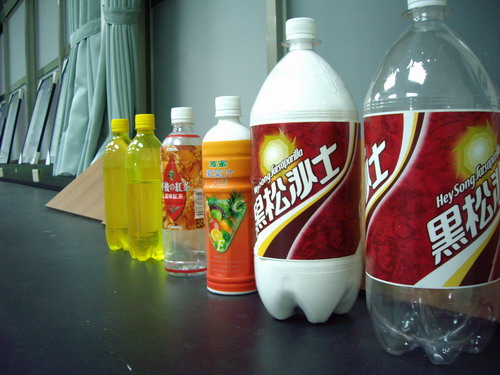
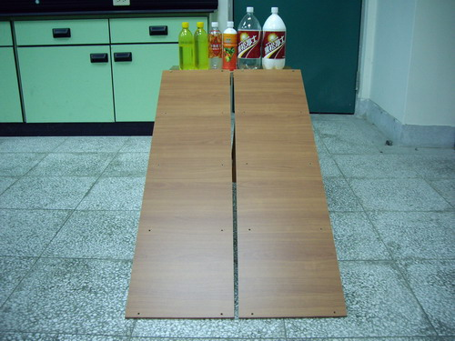

↑寶特瓶賽跑的影片。

↑參加寶特瓶賽跑的選手們，由右邊開始介紹：
1. 大空：大的空寶特瓶。
2. 大滿：大的寶特瓶，裡面裝滿滿的太白粉(無法流動)。
3. 小滿：小的寶特瓶，裡面裝滿滿的太白粉(無法流動)。
4. 小空：小的空寶特瓶。
5. 半水：小的寶特瓶，裡面裝半瓶的水。
6. 阿水：小的寶特瓶，裡面裝整瓶的水。

↑選手在跑到起點合影留念。想一想，怎樣的寶特瓶會最快滾到終點？
提示：好聽歌曲→圓週運動一定需要什麼力
的歌詞：動起來的困難度要看質量轉起來的困難度就要看轉動慣量......